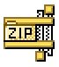
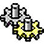
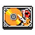
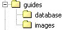
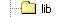
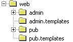
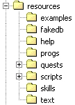
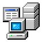

|
|

The first and most critical step in installing CoffeeMud 5.9
is to make sure that you have downloaded and installed the latest
version of the Sun Java SDK, though it only requires JDK 1.6 or
better. If
you are using some flavor of Unix or Linux instead of Windows, make
sure you aren't trying to get by with GCJ -- CoffeeMud (and Sun) do not
support it.
Now, if you are upgrading from a previous version of
CoffeeMud, you need to stop here and skip ahead to the section on
upgrading. If this is your first installation, keep reading.
You will now need to unpack the CoffeeMud.zip package into a
directory on your hard drive. This directory may be called, for
instance, "CoffeeMud".
If you are using a UNIX/Linux system, you should now bring up
a console and cd to whatever directory you unpacked CoffeeMud to. You
will first want to convert the dos-formatted install scripts to unix
format. To do this, enter dos2unix InstallUNIX.sh and dos2unix
mudUNIX.sh. Make sure you can write to mudUNIX.sh by issung the
the command chmod 766 mudUNIX.sh Now, enter sh
InstallUNIX.sh Follow the prompts by inputting the directory of
JAVA; do not enter a trailing slash, for instance: /opt/jdk/jdk1.6.0_22
Continue following the prompts: Say y if you want to
compile the main program, n if you don't. Enter the name
of your new MUD (this only works FIRST RUN; you cannot use this to
change MUD's name in the FUTURE). Say y if you want to
start your MUD now, and n if you don't. Hit enter after
the nohup comes up.
If you are using Windows, or you are using UNIX/Linux and have
completed the above instructions...
Congratulations!
You have successfully installed CoffeeMud.
You may wish, at this point, to investigate the settings and
components of the CoffeeMud server. If so, by all means, continue
reading this document. If you couldn't care less, then go into the your
CoffeeMud directory on a command line or DOS prompt and enter (for
Windows or DOS users):
java -classpath ".;.\lib\js.jar;.\lib\jzlib.jar"
-Xmx85m com.planet_ink.coffee_mud.application.MUD "Your Muds Name"
And for Unix, Linux, or FreeBSD users, the command differs
only in the classpath:
java -classpath ".:./lib/js.jar:./lib/jzlib.jar"
-Xmx85m com.planet_ink.coffee_mud.application.MUD "Your Muds Name"
This will start up the CoffeeMud server. Remember to change
the "Your Muds Name" text at the end to the unique name you want to
give your mud. If you are running Windows, you might also get away with
first modifying the file mud.bat
using your best text editor, and then executing that file. If you are
running some
flavor of FreeBSD, Unix, or Linux, you also have a mudLINUX.sh you may
first modify, then make executable using the command chmod 755
mudLINUX.sh, and then execute.
Now, connect to the server on port 5555 using your telnet or
other MUD client. Create yourself a new character. This new character
will be your administrative player, or Archon, so most of the player
settings, such as class, race, stats, etc. won't matter much (though I
would stay away from the Apprentice class). When your
character logs in for the first time, you will see a book in a room.
Your player should pick up the book and read it. The commands to do
this are:
get book
read book
Doing this will turn your player into an Archon. An Archon is
an all-powerful administrative player who is capable of all manner of
magical conjurations. You will probably want to import a bunch of areas
into your database right away. If so, you should enter:
ahelp import
This will tell you how to import *.CMARE files, which are
CoffeeMud formatted area files. Other formats are supported as
well.
Another way to quickly see some content in your mud is to enter
this long command:
generate area
random_dungeon areaname=MyRandomDungeon south
This will generate a
random 30-60 room dungeon based on one of the random themes in the
/resources/randreas/example.xml file to the south of
your current room.
If you'd like to actually learn how to use the CoffeeMud
engine, you should do the following:
Otherwise, once you have your administrator and a few areas,
you are technically ready to play!
There are three upgrade paths, one where the database schema
was not changed (4.5.0 to 4.5.1), and two others where the database
schema was changed (i.e. 4.7 to 5.0) . If you are unsure, or don't know
how to tell, go ahead and follow the changed database schema process.
If you are upgrading to a version where the database schema
has (presumably) not changed, you still must expect that many other
things probably have. Therefore, follow these steps:
-
First go into the directory that contains your olde
version of CoffeeMud and obliterate the entire "com" path. Just wipe it
away. You won't need it, and it will just cause problems anyway. If you
had any custom classes in there, you might want to pull them out first
and copy them elsewhere.
-
Next, save away (in another directory) your coffeemud.ini
file, and perhaps your mud.bat or mudLINUX.bat. Also save away any
files in the resources or web directory you might have customized to
your mud, including perhaps your resources/text/intro.txt file for
instance. Other files you might have changed include resources/achivements.ini,
resources/titles.ini, or perhaps some of the skill recipes under
resources/skills/*.
-
Now unpack/unzip the new version of CoffeeMud on TOP of
your olde one.
-
Open up the coffeemud.ini file that comes with the new
version and also open up your olde customized coffeemud.ini file you
saved away in step 2. Merge over from the old ini file the settings
that
differ from the new one. The idea here is that the new coffeemud.ini
file may contain new settings you need to be aware of. However, your
old custom settings will still apply in the new version -- especially
your database settings for instance.
-
Copy your intro.txt on top of the one from the new build.
As in step 4, merge any other files back into their counterparts in the
new build.
-
Smile, you are done.
If you are upgrading to a version with an updated database
schema, follow the correct instructions for your database type. If you
are using fakedb, follow the instructions below. If you don't know
whether or not you are using fakedb, then you ARE using fakedb and
should follow these instructions:
-
Go into the CoffeeMud directory for your olde version and
copy the entire fakedb data directory to somewhere else on your hard
drive. On CoffeeMud versions 1.2 - 4.7, your fakedb data directory is
located in your coffeemud folder in the "data" directory. In versions
5.0 and higher, it is located in your coffeemud folder in the
"resources/fakedb" directory. You should see a file called
fakedb.schema, along with numerous fakedb.data.* files. Copy them all,
and remember where you put them!
-
Go back to the beginning of this section and follow steps
1 through 5 from the unchanged database schema process.
-
From the command line, go into your CoffeeMud directory,
and from there into fakedb data directory. Delete all the files
matching fakedb.data.*, praying you remembered where you saved this
stuff away just 2 steps ago. Do NOT delete the fakedb.schema
file! If everything
went well, the new fakedb.schema from the new version of CoffeeMud is
still in your fakedb data directory.
-
Still from the command line, go into your CoffeeMud
directory and enter the following: java
com.planet_ink.fakedb.DBUpgrade
-
Follow the instructions for this little program.
-
Smile, you are done.
Now, if you are upgrading to a version with an updated
database schema and you are NOT using fakedb, but are using Access, SQL
Server, MySQL, or some other database, follow these instructions:
-
Go into the CoffeeMud directory for your olde version and
copy the entire fakedb data directory to somewhere else on your hard
drive. On CoffeeMud versions 1.2 - 4.7, your fakedb data directory is
located in your coffeemud folder in the "data" directory. In versions
5.0 and higher, it is located in your coffeemud folder in the
"resources/fakedb" directory. You should see a file called
fakedb.schema, along with numerous fakedb.data.* files. Copy them all,
and remember where you put them! Even though you aren't using FakeBD,
you will still need to copy FakeDB's schema for use with the upgrade
application.
-
Go back to the beginning of this section and follow steps
1 through 5 from the unchanged database schema process.
-
Following the instructions provided by your database
system, create a brand NEW database for the new version of CoffeeMud.
You will need to use the appropriate database schema provided in the
new version of CoffeeMud to do this. If you have forgotten what this
means, consult the section of this document dealing with the CoffeeMud
Database. Make sure you preserve your olde CoffeeMud database from the
olde version!
-
From the command line, go into your CoffeeMud directory
and enter the following from the command line: java
-Xms16m -Xmx256m
com.planet_ink.fakedb.DBUpgrade
- NOTE: You may need to add the classpath variable to your
database connector (if not FakeDB). Refer to the first-time
installation instructions for the CLASSPATH format. For example,
if you are using a MYSQL drive, the command might look like:
java
-Xms16m -Xmx256m -cp
"/myjavastuff/drivers/mysql-connector-java-5.1.6-bin.jar"
com.planet_ink.fakedb.DBUpgrade
-
Follow the instructions for this little program.
-
Now open up your coffeemud.ini file and make any changes
necessary to point CoffeeMud to the database for the new version. This
may require creating a new ODBC data source, or just modifying the
DBSERVICE line, depending on your database type.
-
Smile, you are done.
All of the general purpose settings for the CoffeeMud server
are kept in the INI file, called "coffeemud.ini". This file may be
modified with your favorite text editor: textpad, vi, emacs, copycon,
Whatever! If you are adventurous, you may also specify a custom ini
file other than "coffeemud.ini" by putting a boot= myfile.ini entry in
your startup line just before the name of your mud. Why would you want
to? I don't know, but you can.
If you are happy with the standard installation, you will
usually also be content to leave most of the INI file alone. You will
eventually, however, probably find a need to at least modify the
"START" setting. Any changes to the coffeemud.ini file will require
that CoffeeMud be restarted before the changes will take effect.
Below are some of the more important configuration settings to
be aware of in your ini file. There are actually many many more, but
they just aren't discussed here. The best way to modify those "other"
settings is through the Control Panel in the MUDGrinder
web site.
- SYSMSGS, ERRMSGS, WRNMSGS, DBGMSGS,
ACCMSGS, HLPMSGS
These entries refer to logged system messages, logged
error messages, warning messages, debug messages, web server
access logs, and help requests. When logging is
directed to a file, that file is called "mud.log". The possible values
for each of these settings is either "ON", which will direct the
indicated messages to the screen only, "OFF" to disable the messages
entirely, "FILE" to direct the messages to the "mud.log" file only,
"OWNFILE" to direct the messages to a file of its very own, or
"BOTH" for both screen and normal file output. By default, SYSMSGS,
WRNMSGS,
and ERRMSGS
are set to "BOTH", while DBGMSGS and ACCMSGS are set to "OFF", and
HLPMSGS set to "OWNFILE".
- PORT
This is the TCP/IP port number which the main CoffeeMud
server will listen on. By default the setting is 5555. If you would
like to change this number to some other port, you may do so! You may
also add other numbers, separated by commas, to listen on multiple
ports!
- MUDSTATE
This is a short description of the state of your mud as
you want it published to the I3 or IMC2 network. A number from 0
(meaning Development) to 3 (Live and Ready) is expected.
- START
This setting designates the Room ID of the place on your
map where new players will start off at. It also dictates where players
are brought to when the Recall skill is used. By default, an arbitary
room ID has been assigned. Once you've put together a few areas, you
had better update this setting before new players start arriving.
- CHANNELS
This is a comma separated list of channels which the users
of your system may converse publicly on. The channel names
given here are completely arbitrary and may be meaningful or whimsical
terms, though the names may not contains spaces. There are lots
of options to peruse over here, and a couple of standard
channels are specified to get you started. The limit for the number of
standard channels
plus any InterMud channels (see I3CHANNELS
below) is 48 or so. That's more than plenty, right?
- BACKLOG
This TCP/IP setting denotes how many connections can be
queued up when the server is busy. Leave it at 6.
- BIND
This TCP/IP setting will limit the IP addresses which can
connect to your server. It is commented out by default, which means
that everyone is allowed to connect. Leave it that way, unless you want
your mud to be secret.
- RUNI3SERVER
This setting tells CoffeeMud whether to start up the
built-in InterMud3 server and make a connection to the InterMud router.
A value of "TRUE" will turn on the I3 server and make the connection.
- I3PORT
This is the TCP/IP port number which the main InterMud3
server will listen on. By default the setting is 27766. If you would
like to change this number to some other port, you may do so. If the RUNI3SERVER entry above is FALSE, this setting
will have no effect.
- I3CHANNELS
This is a comma separated list of InterMud3 channels which
the users of your system may converse publicly on. Each channel entry
is separated by a comma. Each entry consists of a locale channel name
(no spaces in the name), followed by a space, followed by a mask to
limit who can view or chat on the channel, followed lastly by the name
of the InterMud3 channel to map this local channel
to. A couple of standard channels are specified. The limit for the
number of standard channels (see CHANNELS
above) plus any InterMud channels is 48.
- RUNWEBSERVERS
This setting tells CoffeeMud whether to start up the
built-in web servers. A value of "pub,admin" will turn on both of the
main web servers.
Even if you don't wish to publish any of your MUDs information to the
web, you may want to run the Admin web server so that you can use the
MUDGrinder area editing tool. See the MUDGrinder
Guide for more information on this tool. For more information on
the CoffeeMud web server in general, please read the WebServer Guide.
- RUNSMTPSERVER
This setting tells CoffeeMud whether to start up the
built-in SMTP (mail) server. A value of "TRUE" will turn on the SMTP
servers. Even if you don't wish to allow any incoming mail, you may
want to run the mail server so that you can create outgoing newsletters
for your players. For more information on the CoffeeMud SMTP server in
general, please read the SMTPServer Guide.
- ITEMS, MOBS, BEHAVIORS, ABILITIES,
CHARCLASSES, RACES, COMMANDS, LOCALES, AREAS, EXITS, etc
These settings each specify a path on your local drive
which will contain Java class files. These class files are typically
classes which you might want to use with your CoffeeMud system, but
which are not included with the standard CoffeeMud distribution. See
the Programmer's Guide for more
information on writing custom classes for CoffeeMud.
- DBCLASS
This specifies the name of the Java class which will be
used as your JDBC or ODBC database driver. If you are using a System
ODBC data source, this entry will typically be
"sun.jdbc.odbc.JdbcOdbcDriver". By default, however, the CoffeeMud
"fakedb" package is installed. The driver name for this class is
"com.planet_ink.fakedb.Driver". See the next section on "The CoffeeMud
Database" for more information.
- DBSERVICE
This is the name of the JDBC or ODBC Service as defined by
your local operating system. It typically denotes the name of the ODBC
service, or the name of the database in other instances. For a System
ODBC service, this value will typically look like
"jdbc:odbc:SystemServiceName". By default, however, the fakedb package
is used. The format of the service name for fakedb is
"jdbc:fakedb:DataPath". Where DataPath is a local drive path containing
the "fakedb.schema" file, where your flat data files will be created.
See the section on "The CoffeeMud Database" for more information.
- DBUSER, DBPASS
This specifies the name and password which may or may not
be required to log into your ODBC service, or database. Not required
for fakedb, and thus blank by default.
- DBCONNECTIONS
This is the number of independent connections to make to
the database through your JDBC/ODBC driver. 1 or 2 is plenty. CoffeeMud
is not especially database intensive.
- DBREUSE, DBPINGINTERVALS
These are for tweeking how CoffeeMud uses database
connections. DBREUSE is true to permit the mud to re-use existing
connections over and over, instead of making new ones. When
DBREUSE is true, DBPINGINTERVALS will help you keep them alive during
dormancy by saying how frequently to ping those connections with a
trivial query.
* In Addition to the above, you will find other numerous flags
and settings which allow you to better customize your CoffeeMud. Make
sure you check out the Control Panel feature in the MUDGrinder to
modify most of them.

There may be circumstances under which you may want to run
your mud not only on multiple ports, but with multiple configurations,
or multiple maps, perhaps even multiple player bases. This is
accomplished by including the "BOOT=" command line parameter multiple
times. Each occurrence should be followed by the name of a valid
coffeemud ini file, as described in the previous section. The
server will then attempt to boot two muds in the same Java environment,
each relying to some extent on their own ini files for database and
other information.
java -classpath ".:./lib/js.jar:./lib/jzlib.jar
-Xmx256m com.planet_ink.coffee_mud.application.MUD
boot=coffeemud1.ini boot=coffeemud2.ini "Your Two-Headed Muds Common
Name"
The first BOOT parameter is considered by the CoffeeMud Engine
to be the Primary Host (HOST0), and any game resources that are shared
will be done with this host. Subsequent ini file
configurations will rely on the Primary Hosts ini file to fill in any
gaps in necessary configuration entries. Subsequent hosts will
also use their own ini files to select which resources to share with
the Primary Host, and which to manage independently, separately,
and privately from the Primary host.
Important INI file entries for Subsequent Host ini files:
PORT: required in all ini files. No host will boot
without at least one unique value here.
DBCLASS: if a subsequent hosts ini file contains a DBCLASS entry, then
that host will manage its own private Database connections.
NUMLOGS, SYSMSGS, ERRMSGS, etc: manage its own log file.
SYSOPMASK, JSCRIPT, GROUP_*: manage its own security settings
RUNWEBSERVERS: launch its own web servers
RUNSMTPSERVER: launch its own smtp server (but why?!)
RUNI3SERVER, other I3 settings: always ignored. Only the Primary Host
may launch I3 servers and clients.
RUMIMC2CLIENT, other IMC2 settings: always ignored. Only the
Primary Host may launch IMC2 clients.
PRIVATERESOURCES: defines resources not shared with the Primary Host.
See below.
All other ini file entries will either be specified in
the Subsequent Hosts ini
file and therefore unique, or they will not be specified, and therefore
have their values copied from the Primary Host ini file.
The PRIVATERESOURCES entry defines which of the CoffeeMud
engines primary resources will be private to the Subsequent Host,
meaning not shared with the Primary Host. This ini file entry is
a comma-delimited list of resources to maintain privately in the
Subsequent Host, and is defined only in each Subsequent Hosts ini file.
Each resource manages a different sphere of MUD
activity, so it is wise to consider carefully the interactions of
shared and unshared resources. For instance, the CHANNELS
resource manages list of channel names and their functions, while
SESSIONS manages the list of online players and who may speak to each
other over channels, JOURNALS the list of command journals, STATS the
player statistics, MAP the world map, LOGINS the list of start rooms,
QUEST the list of quests, FACTIONS your factions list, CLANS the player
clans, POLLS the online polls, CATALOG your item drop tables and object
catalogs, PLAYERS the player cache and tables, TITLES your automatic
vanity titles, TIME the global calendar/clock, DBVFS the
database-portion of your file system (very
important if you want different intro.txt or other files for different
hosts), and the various object types if you want to prevent your
builders to have different available objects on different hosts.
It is recommended that your subsequent ini files include, at
least the PORT, one new administrative RUNWEBSERVERS entry, a DBCLASS
entry pointing to a dedicated CoffeeMud database for each host, and
several PRIVATERESOURCES.. probably DBVFS, PLAYERS, MAP, STATS,
QUEST, and CLANS. If you dont want your players to be able
to chat with each other over channels, or see each other with the WHO
command, you might add CHANNELS and SESSIONS to the list as well.

Here is a summary of the directories inside the CoffeeMud
package, along with some of the important files you may want to edit
when configuring your server.
The directories inside the com directory contain
all the Java Class files, which are the executable portion of
CoffeeMud. All of the Java source files are also found herein.

The guides directory is where you'll find this
document, as well as other HTML documents you may find helpful in
configuring your server as well as building areas inside it.
The guides/database directory is where you'll
find several SQL scripts necessary to configuring another database
engine, such as SQL Server, MySQL, PostgreSQL, Access, and others.
The guides/images directory contains image files
used inside the HTML files in the guides directory.

The lib directory holds any external libraries
or
components necessary to run CoffeeMud, but not necessarily part of the
CoffeeMud source proper. For instance, this directory holds the Mozilla
Rhino Javascript library jar file, called js.jar, as well as the zlib
library file, called jzlib.jar.

The web directory is where you'll find several
important files related to the configuration of the two default web
servers: admin, and public (pub): You may want to edit them at some
point, or not. It's up to you. You'll probably be happier if you at
least look them over so you know what settings you CAN edit.
| admin.ini |
The configuration file for the admin web server. This
is the server which, by default, governs the MUDGrinder and other
server administrative pages and utilities. |
| common.ini |
The configuration file for certain settings common to
both the admin and public web servers. |
| pub.ini |
The configuration file for the public web server. |
| email.ini |
The configuration file for the smtp server. |
The admin directory is where the pages made
available by the admin web server are found, by default. This directory
also contains the admin/images to store image files
displayed by the admin pages, as well as the admin/grinder
directory, where the MUDGrinder pages are stored by default.
The admin.templates directory is where the
default error page for the admin web server is found.
The clan.templates
directory is where the
default clan/guild web site is found.
The pub directory is where the pages made
available by the pub web server are found, by default. This directory
also contains the pub/images to store image files
displayed by the public web pages, as well as the pub/sounds
directory where MSP sound files are stored for players to access.
The directory pub/images/mxp
contains all of the MXP displayable images, including the file pub/images/mxp/intro.jpg,
which is the image displayed when players who have MXP compliant mud
clients log into your mud. To use multiple/random intros, just insert
numbers before the extension for additional ones (intro1.jpg,
intro234.jpg)
The pub.templates directory is where the default
error page for the pub web server is found.

The resources directory is where you'll find
most
of the important files for tinkering with the configuration of several
aspects of your system. Some of these files are in the resources
directory itself, and some are in its subdirectories. The important
files found in the resources directory are:
| achievements.ini |
The configuration file for the Achievements system.
Edit away! |
| chat.dat |
The configuration file for the MudChat behavior. You
can edit this one too. |
| clangovernments.xml |
The configuration file for the Clan Types. |
| ipblock.ini |
A list of all ip addresses or ip ranges to block! |
| laws.ini |
The default configuration file for the Arrest behavior.
You can edit this, but its easier to deal with law through law books. |
| lawtoc.ini |
The default pages file for the GenLawBook item. |
| movingroom.xml |
A sample configuration file for the MovingRoom behavior. |
| parser_en_TX.properties |
The definitions file for CoffeeMud's user-input
translation engine. |
| translation_en_TX.properties |
The definitions file for CoffeeMud's user-putput
translation engine. |
| socials.txt |
The text file holding all of the socials. There is a
command line tool for updating this file. |
| mxp_images.ini |
A definition table for the default image files used for
mxp clients. |
titles.ini
|
A definition file for automatic player
titles. Can be modified directly, or with the CREATE/LIST/DESTROY TITLE
commands.
|
| lists.ini |
A properties file containing several miscellaneous
charts and tables for user modification. |
The resources/catalog directory is not locally
accessible, and exists only in the coffeemud database file system
(VFS). It is completely system generated, and contains xml
(*.cmare)
versions of all the mobs and items you use in your Catalog system.
See
the Archon's or Game Builder's guide for more information.
The resources/fakedb directory is where all
area, room, mob, journal, and player data is stored when the FAKEDB
system is being used. When FAKEDB is not being used, this directory is
unused.
The resources/examples directory is where you'll
find sample files for a variety of things.
| areareaction.ini |
A template for use by the Faction system for automatic
mob reactions based on area. See AUTOREACTION in your
coffeemud.ini file for more information on this system. |
deities.cmare
|
A cmare file with some example deities to
load into your mud. Use the IMPORT command to load this set of mobs.
|
factiontemplate.ini
|
A template file for use by the creation
wizard when new factions are created. Do not modify this file!!
|
| FindRawMaterial.js |
A sample Command class written in javascript as an
example of how to write coffeemud commands in javascript. Use
LOAD COMMAND resources/examples/FindRawMaterial.js to install it, and
then
enter FINDRAWMATERIAL IRON at the command line to run it. |
reputation.ini
|
Sample faction ini file, which you may add
to the value of the FACTIONS tag in your coffeemud.ini file to make use
of.
|
Lemmings.js
|
A sample MOB class written in
javascript
as an example on how to write coffeemud code. Use LOAD MOB
resources/examples/Lemming.js to load it up, and see the Programmer's
Guide for more information
|
| namereaction.ini |
A template for use by the Faction system for automatic
mob reactions
based on mob name. See AUTOREACTION in your coffeemud.ini file
for more
information on this system. |
| QuickWho |
Another sample Command class written in javascript as
an
example of how to write coffeemud commands in javascript. Use
LOAD COMMAND resources/examples/QuickWho.js to install it, and then
enter QUICKWHO at the command line to run it. |
| racereaction.ini |
A template for use by the Faction system for automatic
mob reactions
based on mob race. See AUTOREACTION in your coffeemud.ini file
for more
information on this system. |
The resources/factions directory is where you
should put all of your faction definition files. The
standard faction shipped with the mud, called Alignment, is found in
there.
The resources/help directory is where you'll
find
all of the files responsible for the numerous standard and archon HELP
entries. It also contains the two text files shown when help and ahelp
are entered without parameters. The *.ini files are formatted as java
property files, meaning that they are in ENTRY=VALUE format. The VALUE
may span several lines, so long as it ends with a backslash \. Files
that contain help entries for the ARCHELP (archon help) command all
start with arc_*, while those that do not are for the HELP (player
help) command.
The resources/progs directory contains several
sample program files:
| autoplayer |
Don't look in here -- it's barely even started.
Just junk right now. |
blackjack.script
|
Sample blackjack dealer
MOBPROG. By adding LOAD=progs/blackjack.script to the parameters of a
Scriptable behavior which has been added to a genmob, you can make that
mob a blackjack dealer. See help on Scriptable for more information.
|
| chardesc.script |
A sample script to use with your coffeemud.ini files'
CHARCREATIONSCRIPTS entry. |
clearChannelQue.js
|
Sample javascript archon command that
clears the backlog on a given chatter-channel. To use the command,
enter JRUN resources/progs/clearChannelQue.js <channel_name>
|
coffeeanthem.script
|
Sample MOBPROG script to make a mob sing
the CoffeeMud anthem every day. Added to mobs the same way
blackjack.script is added above.
|
craps.script
|
Sample MOBPROG script to make a mob a
craps dealer. Added to mobs the same way blackjack.script is added
above.
|
everyoneIsHome.js
|
Sample javascript archon command that
tests to see if any mobs are outside their home areas. To execute,
enter JRUN resources/progs/everyoneIsHome.js
|
heresy.script
|
Sample MOBPROG script to make
a mob accuse anyone who enters their room of heresy. Added to mobs the
same way blackjack.script is added above. Requires that the area the
mob is home to has the Arrest behavior (to implement law in that area).
|
knucklebones.script
|
Sample MOBPROG script to make a mob a
knucklebones dealer. Added to mobs the same way blackjack.script is
added above.
|
maxItemsRoom.js
|
Sample javascript archon command to tell
you which rooms have the most items in them. To execute, enter JRUN
resources/progs/maxItemsRoom.js
|
mrinfo.script
|
Sample MOBPROG script to demonstrate
various triggers. Added to mobs the same way blackjack.script is added
above.
|
| scriptableTest.script |
A MOBPROG to test various triggers in Scriptable. |
strangetrader.script
|
Sample MOBPROG script to demonstrate
various triggers. Added to mobs the same way blackjack.script is added
above.
|
The resources/quests directory contains several
sample quests. Each quest is in its own directory, along with any
supporting Scriptable *.script files, and any supporting mob or item
*.cmare files. The CREATE QUEST command is used to load each of these
*.quest files. Quests may also be loaded via the MUDGrinder.
The resources/randareas directory contains
sample
random area data templates, which all end with the *.xml extension. The
sample file "example.xml" is in this directory, which contains
instructions for making new template files by hand. Random area
templates
can also be modified via the MUDGrinder.
| example.xml |
A default area generation file for the GENERATE command. |
The resources/skills directory contains the
database of recipes used by the Common skills in CoffeeMud. Each text
file contains recipe for a single skill, and each is formatted in
tab-delimited format, with rows separated by carriage returns. This
directory includes:
| alchemy.txt |
Recipes for the Alchemy skill
|
| allqualifylist.txt |
List of skills that span across all classes. |
| armorsmith.txt |
Recipes for the Armorsmithing skill
|
| bake.txt |
Recipes for the Baking skill
|
| blacksmith.txt |
Recipes for the Baking skill
|
| cagebuilding.txt |
Recipes for the Blacksmithing skill
|
| carpentry.txt |
Recipes for the Carpentry skill
|
| clancraft.txt |
Recipes for the Clan Crafting skill
|
| cobbler.txt |
Recipes for the Cobbler skill
|
| components.txt |
Definitions file for spell/skill
components. Can modify this file, or use CREATE/LIST/DESRTROY
COMPONENTS commands
|
| costume.txt |
Recipes for the Costuming skill
|
| expertises.txt |
Definitions file for spell/skill
expertises. Can modify this file, or use CREATE/LIST/DESTROY EXPERTISES
commands
|
| fletching.txt |
Recipes for the Fletching skill
|
| foodprep.txt |
Recipes for the FoodPrep skill
|
| glassblowing.txt |
Recipes for the Glass Blowing skill
|
| herbalism.txt |
Recipes for the Herbalism skill
|
| herbology.txt |
Recipes for the Herbology skill
|
| instruments.txt |
Recipes for the Instruments skill
|
| insultd.txt |
Insults text source file for the Joke skill
|
| insulto.txt |
Other insults text source file for the
Joke skill
|
| jewelmaking.txt |
Recipes for the Jewelmaking skill
|
| leatherworking.txt |
Recipes for the Leatherworking skill
|
| liquors.txt |
Recipes for the Distilling skill
|
| masterarmorsmith.txt |
Recipes for the Master Armorsmithing skill
|
| mastercostume.txt |
Recipes for the Master Costuming skill
|
| masterleatherworking.txt |
Recipes for the Master Leatherworking skill
|
| mastertailor.txt |
Recipes for the Master Tailoring skill
|
| masterweaponsmith.txt |
Recipes for the Master Weaponsmithing skill
|
| papermaking.txt |
Recipes for the Papermaking skill
|
| planesofexistence.txt |
Recipes for Planeshift, Planar Travel, and Plane Walk |
| poisons.txt |
Recipes for the Poisons skill
|
| pottery.txt |
Recipes for the Pottery skill
|
| recipes.txt |
Recipes for the Cooking skill
|
| scrimshaw.txt |
Recipes for the Scrimshawing skill
|
| scribing.txt |
Recipes for the Scroll Scribing
|
| sculpting.txt |
Recipes for the Sculpting skill
|
| shipwright.txt |
Recipes for the ShipWrighting skill
|
| siegecraft.txt |
Recipes for the Siegecraft skill |
| smelting.txt |
Recipes for the Smelting skill
|
| tailor.txt |
Recipes for the Tailoring skill
|
| taxidermy.txt |
Recipes/Descriptiong for the Taxidermy
skill
|
| torturesmith.txt |
Recipes for the Torturesmithing skill
|
| wainwright.txt |
Recipes for the Wainwrighting skill
|
| weaponsmith.txt |
Recipes for the Weaponsmithing skill
|
| weaving.txt |
Recipes for the Weaving skill
|
The resources/text directory contains several
text files displayed at different points in the CoffeeMud engine. Feel
free to load these into a text editor and have at them. A summary is as
follows:
| alignment.txt |
A text file describing alignment to new players. |
blocked.txt
|
A file shown to someone permanently
blocked.
|
| classes.txt |
A text file describing class selections for new players. |
connblocked.txt
|
A file shown to someone temporarily
blocked.
|
| credits.txt |
The text file shown to users who use the CREDITS
command. |
| down.txt |
The text file displayed to users only when the OffLine
application is running. |
doneacct.txt
|
A file shown after account creation, but
before character creation.
|
| email.txt |
The text shown to players during character creation
regarding the email address prompt. |
| intro.txt |
The text file displayed to users when they connect to
your mud. To use multiple/random intros, just insert numbers before the
extension for additional ones (intro1.txt, intro234.txt) |
| mxp.txt |
A text file containing the complete MXP dictionary. See
http://www.zuggsoft.com/zmud/mxp.htm
for more information on this feature. |
newacct.txt
|
A text file introducing new accounts.
|
newchar.txt
|
A text file introducing your mud to new
players.
|
| newchardone.txt |
A text file shown to players after they have created
their character. |
nologins.txt
|
A text file shown to non-archons who try
to login when the LOGINS flag is disabled in the coffeemud.ini file.
|
| offline.txt |
A text file shown to players while your mud is booting. |
| races.txt |
A text file describing race selections to new players. |
rules.txt
|
A text file shown when players enter the
RULES command.
|
selchar.txt
|
A text file shown on account char
selection.
|
| stats.txt |
A text file describing the basic stats to new players |
themes.txt
|
A text file shown to users when the
coffeemud.ini file is configured for multiple themes. Not presently
supported very well, however.
|

CoffeeMud requires a database for operation. A database is
simply the place where all the rooms, items, monsters, players, pets,
and other information is stored on the computer. Without the database,
you would have to start all over from scratch every time you booted the
MUD Server. And we all know that would be bad.
By default, CoffeeMud uses a custom JDBC flat-file database
called "fakedb". FakeDB stores its data into text formatted files
inside the "resources/fakedb" directory of your CoffeeMud package.
FakeDB is rather slow, and hardly a powerful or professional database
system, but it is quite sufficient for CoffeeMud tinkerers, and
performs well the
small tasks it was designed for.
For the more serious, CoffeeMud supports any JDBC or ODBC
compliant database system. This includes such systems as Microsoft
Access, Microsoft SQL Server, PostgreSQL, MySQL, Oracle, IBM DB2, and
others. While this document cannot cover the step by step installation
instructions for each of these systems, it can be pointed out that
everything you need has been provided. Inside the "guides/database/"
directory of your CoffeeMud package, you will find several files:
"coffeemuddb.sql", "coffeemuddbmssql.sql", "coffeemuddbaccess.sql",
"coffeemudibmdb2.sql", "coffeemuddbmysql.sql", "coffeemuddbpsql.sql",
"coffeemuddbhsql.sql", "coffeemuddderby.sql", and "fakedb.schema". The
first five are SQL Scripts which can be used to create the necessary
tables in Microsoft SQL Server ("coffeemuddbmssql.sql"), MySQL
("coffeemuddbmysql.sql"), Access ("coffeemuddbaccess.sql"), PostgreSQL
("coffeemuddbpsql.sql"), Derby ("coffeemuddbderby.sql"), HSQLDB
("coffeemuddbhsql.sql"), IBM DB2 ("coffeemudibmdb2.sql")and some of the
others. The last is a copy of the same fakedb file from your
"resources/fakedb" directory, in case it becomes corrupted. Although
the manner in which the SQL Scripts are used may differ from system to
system, they cannot all be covered here. Some of the scripts may need
to be changed slightly to work with some systems. Some systems will
require each SQL Statement be issued independently instead of as part
of a larger script. Please consult your database documentation for more
information on this.
In order to use your database with CoffeeMud, as specified in
the section on Settings, you must provide CoffeeMud with a JDBC
compliant Driver class. In a few cases, you may be creating a System
ODBC Data Source. When this is the case, the driver "sun.jdbc.odbc.JdbcOdbcDriver"
may be used to access the database.
Most systems, however, such as MySQL, IBM DB2, and Microsoft
SQL Server 2000, have native JDBC Drivers which may be used instead of
the general ODBC Driver. These native JDBC Drivers tend to be far
superior to their ODBC counterparts, and are highly recommended.
The care and feeding of the tables used by CoffeeMud should be
very low. The database will grow along with the areas created, and
along with the number of players which join your MUD. All of this
growth can be managed, however, within CoffeeMud itself, by your Archon
administrative user. You should not need to, nor should you attempt to
affect individual rows in your database for any reason.
-
Open up Microsoft Access and select to create a Blank
Access Database. Give the database a name and save it on your hard
drive.
-
Under Objects, select the Queries section and select
Create Query in Design View. When the dialog box appears, click the
close button.
-
Now right click on the large grey area and select "SQL
View" from the context Menu.
-
Inside your CoffeeMud/guides/database folder, open up the
coffeemuddbaccess.sql file using a text editor. You will see that the
file
contains numerous blocks of sql text. Each block begins with CREATE
TABLE, and ends with a semicolon );
-
Select the first block of text in your sql file, from the
first CREATE TABLE line down through the ); line, and select Copy from
the text editor. Paste this block into the Select Query area in
Microsoft
Access. Paste it over any other text that may be in there.
-
Press the "!" symbol at the top to execute the block of
sql script.
-
Repeat steps 5 and 6 for the remaining CREATE TABLE blocks
in the coffeemuddbmssql.sql file.
-
Now go to your Windows Control Panel (under XP, switch to
Classic View) and double-click the ODBC Data Sources (32-bit)
icon. If you are using Windows 2000 or XP, double-click the Administrative
Tools option. Then select the ="">Data Sources (ODBC)
icon.
-
Now, click on the System DSN tab. Click the Add
button. This will present you with a list of drivers. Select " Microsoft
Access Driver (*.mdb)"
-
Here you should probably name the data source something
sensical, like CoffeeMudData or the like. Under Database,
click Select. Locate and select your CoffeeMud.mdb
file that you saved in step 1. Click OK and then OK to get all the way
back out of things.
-
Open coffeemud.ini. Go to where it says "ODBC Database
fields". That section should instead look like this:
#------------------------
# ODBC Database fields
#------------------------
# DBCLASS is the name of the ODBC Driver, typically sun.jdbc.odbc.JdbcOdbcDriver
# DBSERVICE is the name of the ODBC Service as defined by your local operating system
# DBUSER is a user name required to log into the ODBC service
# DBPASS is the password for the above user name
# DBCONNECTIONS is the number of independent connections to make to the database
DBCLASS=sun.jdbc.odbc.JdbcOdbcDriver
DBSERVICE=jdbc:odbc:CoffeeMudData
DBUSER=
DBPASS=
DBCONNECTIONS=1
Where it says "jdbc:odbc:CoffeeMudData", make
sure the part after "jdbc:odbc:"
matches the DNS name you made earlier. Make sure your DBCONNECTIONS is
never set above 1 when using Microsoft Access. Now, reboot CoffeeMud,
and you are done!
-
Go to www.mysql.com,
click on Downloads (one of the tabs at the very top). Download the
latest generally available production version.
-
Go back to the Downloads tab, this time scroll down to
MYSQL Connectors. Download the latest Connector/J, or whatever they are
calling their JDBC Driver at the time.
-
Install MySQL -- consult the web site if you are having
problems.
-
Go to your coffeemud folder, open the guides\database
folder,
and you will see a file called "coffeemuddbmysql.sql". Open that file
with a text editor or textpad etc... (you might want to make a backup
copy first...) Now, add the following:
# Connection: SQL
# Host: localhost
# Saved: 2003-04-01 00:29:14
#
# Connection: SQL
# Host: localhost
# Saved: 2003-04-01 00:27:39
#
use coffeemud <----ADD THIS LINE!
CREATE TABLE CMCHAB (
CMUSERID char (50) NULL ,
CMABID char (50) NULL ,
CMABPF int NULL ,
CMABTX text NULL
etc..
etc..
Now copy the edited coffeemuddbmysql.sql to your c:\program
files\mysql\bin
folder (or wherever you installed mysql).
-
Now, open a DOS window (Start > Run > type "cmd"
and hit enter) and type cd c:\program files\mysql<tab>\bin and
hit Enter. Type
"mysql" and enter. You should get a Welcome to the MySQL monitor etc.
etc. etc.. and now the prompt should simply say "mysql>" . Now type
"create database coffeemud;" (please note the semi-colon";"!!!) and hit
enter. You should get "Query OK, 1 row affected <0.11sec)" or
something like that... then type "use coffeemud" and hit enter. Next
enter "source coffeemuddbmysql.sql" and hit enter. After a moment or
two, it will be done. Lastly, enter "\q", that should quit you out of
the monitor.
-
If all went well, you should now have mysql running and
a coffeemud database all set for it to access.
-
Now go to your coffeemud folder and open your
coffeemud.ini file in a text editor, and look for the
section that says:
DBCLASS=com.planet_ink.fakedb.Driver
DBSERVICE=jdbc:fakedb:resources/data
DBUSER=
DBPASS=
DBCONNECTIONS=2
and change it to:
DBCLASS=com.mysql.jdbc.Driver
DBSERVICE=jdbc:mysql://localhost/coffeemud
DBUSER=
DBPASS=
DBREUSE=TRUE
DBPINGINTERVALMINS=60
DBCONNECTIONS=4
-
Go back to the other file you downloaded in STEP 2,
mysql-connector-java-???.zip, and now extract that into a temp
folder. Inside, there should be a "mysql-connector-java-???.jar" file.
Copy the jar file over into your c:\coffeemud\lib
folder. .
- Open up the mud.bat file and add the name of the JAR file
above to the classpath string. For example:
- java -classpath
".;.\lib\js.jar;.\lib\jzlib.jar;.\lib\mysql-connector-java-5.1.6-bin.jar" -Xms64m ....
- ** Your version of the connector jar file may vary!
-
Now, with mysqld still running in the background, just
launch the mud.bat.
-
Download and install mysql from http://www.mysql.com/downloads/index.html.
Make sure mysqld is being run at boot time, and not by the root user.
-
Download and install the mysql jdbc api from http://www.mysql.com/downloads/api-jdbc-stable.html.
Extract the .tar.gz file to a temporary directory. Then copy the
extracted driver JAR file into your /CoffeeMud/lib directory.
- Open up the mudUNIX.sh file and add the name of the JAR
file above to the classpath string. For example:
- nohup java
-classpath
".:./lib/js.jar:./lib/jzlib.jar:./lib/mysql-connector-java-5.1.6-bin.jar"
-Xms65535000 ....
- ** Your version of the connector jar file may vary!
-
Create a coffeemud database from the shell as root type,
"mysqladmin create coffeemud" (in this example we name the db
coffeemud). If you screw up, or need to delete the new db for some
reason, you can always do a "mysqladmin drop coffeemud".
-
Create a user for the new database (user in this example
is called coffee). As root, type "mysql" into the shell. Now enter:
GRANT ALL ON coffeemud.* TO coffee@localhost IDENTIFIED BY "password";
Enter a password for the user inside the quotes. Now type, "quit".
-
Edit the file CoffeeMud/guides/coffeemuddbmysql.sql like
so: at line 9 insert "use coffeemud" (assuming the new db is called
coffeemud). Then save the changes.
-
Run the SQL file as follows: from the shell type, "mysql
< coffeemuddbmysql.sql"
-
Edit the following settings in CoffeeMud/coffeemud.ini:
DBCLASS=com.mysql.jdbc.Driver
DBSERVICE=jdbc:mysql://localhost/coffeemud
DBUSER=coffee
DBPASS=password
DBREUSE=TRUE
DBPINGINTERVALMINS=60
DBCONNECTIONS=4
(no quotes on the password here)
Save your changes and fire up CoffeeMud!
- Get the database software
Go to http://sourceforge.net/projects/hsqldb/
and download the applicable archive.
- Putting HSQLDB into the classpath
Go into the archive that was just downloaded. Extract the
file hsqldb.jar. This file needs to be placed into the classpath. I
merely placed it in "<JRE install path>\lib\ext" (C:\Program
Files\Java\jre1.6.0_22\lib\ext on my system)
- Creating the coffeemud database
Open a command window and navigate to the root of the
CoffeeMUD install directory.
Create the directory for the database to reside in by
executing the following command (or wherever you want to call it):
mkdir coffeemud
Now navigate into the newly created directory.
Next, issue the following command to start the database
interface.
java org.hsqldb.util.DatabaseManager
The system will respond by bringing up a small GUI
application.
Now we need to set up the correct parameters to create the
database. The final parameter of the URL is the name of the database
Type: HSQL Database Engine Standalone
Driver: org.hsqldb.jdbcDriver
URL: jdbc:hsqldb:file:coffeemud
User: <whatever you want>
Password: <whatever you want>
Now that the values have been filled in click ok.
The tables necessary for CoffeeMUD can be setup by:
Open File Menu.
Select Open Script.
Find and open the coffeemuddbhsql.sql file in the CoffeeMUD\guides\database directory.
The script will then be loaded into the program.
Click the Execute button.
The system should return with and update count of 0.
Now to shutdown the database and exit this utility:
Open Command Menu.
Select SHUTDOWN.
Click the Execute Button.
Open the File Menu.
Select Exit.
The coffeemud database will exist in the folder where the
DatabaseManager utility was run.
- Set up CoffeeMUD to use the correct driver
Open coffeemud.ini and scroll down to the ODBC Database
fields section. Comment out the current settings (place a # in front of
them) and add the following lines below them:
#here are the settings for HSQLDB
DBCLASS=org.hsqldb.jdbcDriver
DBSERVICE=jdbc:hsqldb:file:coffeemud/coffeemud
DBUSER=sa
DBPASS=
DBREUSE=TRUE
DBPINGINTERVALMINS=60
DBCONNECTIONS=4
The file: parameter of the DBSERVICE is the path to the
database (relative from the root of the coffeemud directory) followed
by the name of the database.
- Shut down the database gracefully
Open DBConnections.java (com\planet_ink\coffee_mud\core\database\)
in your text editor of choice. Go to the public void
killConnections() function.
Before the synchronized block opens add the following line:
update( "SHUTDOWN COMPACT" );
Now recompile the source and it will work like a dream...
- Smile, you are done.
- Get the database software
Go to http://db.apache.org/derby/derby_downloads.html
and download the distribution( lib or bin, unless you want to build the
whole project ).
- Putting Derby into the classpath
Derby.jar and Derbytools.jar must be placed into the
classpath for them to be of any use. These archives live in the lib
subfolder of the Derby distribution. They can be placed into the root
of the CoffeeMUD folder or they can be placed into "<JRE install
path>\lib\ext" (C:\Program Files\Java\jdk1.6.0_22\lib\ext on my
system)
- Creating the coffeemud database
Open a command window and navigate to the root of the
CoffeeMUD install directory. Issue the following command to start the
database interface.
java org.apache.derby.tools.ij
The system will respond with:
ij version 10.1
ij>
Now we will issue the command that will create the
database.
connect 'jdbc:derby:coffeemud;create=true';
After a time the ij> prompt will return. Now to run the
SQL that will set up the tables:
run '.\guides\database\coffeemuddbderby.sql';
A description of all of the tables created will fill up
the window. Finally, we must disconnect from the database and exit the
utility.
disconnect;
exit;
The coffeemud database will exist in a folder called
'coffeemud' in the current working directory, and if CoffeeMUD is to
find it this must be the root of the coffeemud install.
- Set up CoffeeMUD to use the correct driver
Open coffeemud.ini and scroll down to the ODBC Database
fields section. Comment out the current settings (place a # in front of
them) and add the following lines below them:
#here are the settings for IBM Cloudscape/Derby/ApacheDB
DBCLASS=org.apache.derby.jdbc.EmbeddedDriver
DBSERVICE=jdbc:derby:coffeemud
DBREUSE=TRUE
DBCONNECTIONS=2
- Smile, you are done... well mostly
Currently there are some minor changes that must be made
to the code for Derby to work properly.
- Change?
This step is not really necessary, it just makes things
cleaner. Currently when CoffeeMUD is shut down it does not exit the
database properly, I have not yet worked out a good way to fix this,
however, the following will work:
Open DBConnections.java (com\planet_ink\coffee_mud\core\database\)
in your text editor of choice. Go to the public void
killConnections() function.
after the synchronized block closes add this:
try
{
DriverManager.getConnection("jdbc:derby:;shutdown=true");
}
catch (SQLException se)
{
}
Now recompile the source and it will work like a dream...
- Increasing performance
The basic settings for Derby end up in it being about half
the speed of other databases. The method to correct this is simple,
however, it is very memory intensive (I upped the maximum memory for
CoffeeMUD to 512 Megs, it really only uses about 300 Megs...)
Before running step 4 (the creation of the database),
create a file called 'derby.properties' in the root CoffeeMUD
directory. This file should contain:
# derby.properties
#
derby.storage.pageSize=32768
derby.storage.pageCacheSize=10000
When the coffeemud database is created this time it will
run at about the same speed as other databases. More information on
these properties can be found at <Derby Install
Path>\doc\pdf\tuning.pdf.
In the off chance you should need to keep your mud down while
database, or other software (or hardware?) maintenance is going on, a
small footprint OffLine application is available. This application will
read the port information from your coffeemud.ini file just like the
regular mud server. It will accept connections, but only to display the
file resources/text/down.txt before disconnecting the user
automatically. To execute this application, you should go into your
coffeemud directory and enter:
java com.planet_ink.coffee_mud.application.OffLine
The Shutdown application is a means of shutting down your MUD
remotely without logging in. It is part of the application package of
CoffeeMud, but it does not rely on any of the other internal classes.
You may therefore, if you like, copy the file Shutdown.class onto a
floppy disk and execute it from there, so long as the file is stored in
a com/planet_ink/coffee_mud/application folder or directory.
The Shutdown application requires that you pass to it the URL
of your server, the standard MUD port to connect to, the login name of
a valid Archon character, and the password. You may optionally also
include the word 'true' if you wish the system to reboot instead of
simply shutting down. To execute this application, you should go into
your coffeemud directory or wherever the "com" directory for CoffeeMud
is located, and enter:
java com.planet_ink.coffee_mud.application.Shutdown localhost 5555 AdminName AdminPassword
CoffeeMud supports sending standard chat channel messages,
which you have configured properly in your coffeemud.ini, to a twitter
account. A specific channel may be specified for this purpose,
and can be set up so that only administrators may write to them.
You won't find the instructions for doing this anywhere else, so
please follow closely.
- Download "twitter4j" from http://twitter4j.org/
- Unzip the twitter4j package.
- Inside the twitter4j package is a directory called "lib", and inside that is a file
called "twitter4j-core-?.?.?.jar".
Copy this file to your CoffeeMud\lib
directory, so that it sits alongside js.jar and jzlib.jar.
- If you are using windows, open up the "mud.bat" file in
your CoffeeMud directory, or the "mudUNIX.sh" file if using linux or
mac into a text editor and add a reference to the twitter4j jar
file you added in step 3. If you don't know how to do this, well,
it gets rougher from here, but you will need to look up how to add jar
files to the java executeable classpath from the command line.
- Now, go to twitter.com , log in. Then go to https://apps.twitter.com/ and
register a new application. You will need to obtain 4 different
garbly strings. The first two are obtained by following the application
creation steps. The last two come when you "authorize" access to
your twitter account on behalf of the application.
- OAuth Consumer Key
- OAuth Consumer Secret
- OAuth Access Token
- OAuth Access Token Secret
- Open up your CoffeeMud/coffeemud.ini file and add the
following entries down at the bottom:
TWITTER-OAUTHCONSUMERKEY=Your
OAuth Consumer Key
TWITTER-OAUTHCONSUMERSECRET=Your OAuth Consumer Secret
TWITTER-OAUTHACCESSTOKEN=Your-Oauth
Access Token
TWITTER-OAUTHACCESSTOKENSECRET=Your
Access Token Secret
- Now, still in the
coffeemud.ini file, find the entry for "CHANNELS= ..." Find
the name of the channel you want to tweet from. When you've found
it, put a space and the word TWITTER after
the name of the channel, and before the next comma or end of string.
Any channels with the word TWITTER in their flags list will send
their messages to the twitter feed. Use the other options and
flags to limit access to this channel so that your players can't use it.
- Save the coffeemud.ini file and restart your mud.
|